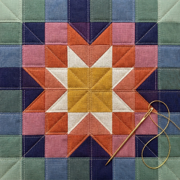

Drop an image to cast your quilt
Drag & drop a PNG, JPG, WebP, or GIF here — or choose one of the two options below:

Turn any image into a square-grid quilt palette
Drag & drop a PNG, JPG, WebP, or GIF here — or choose one of the two options below: